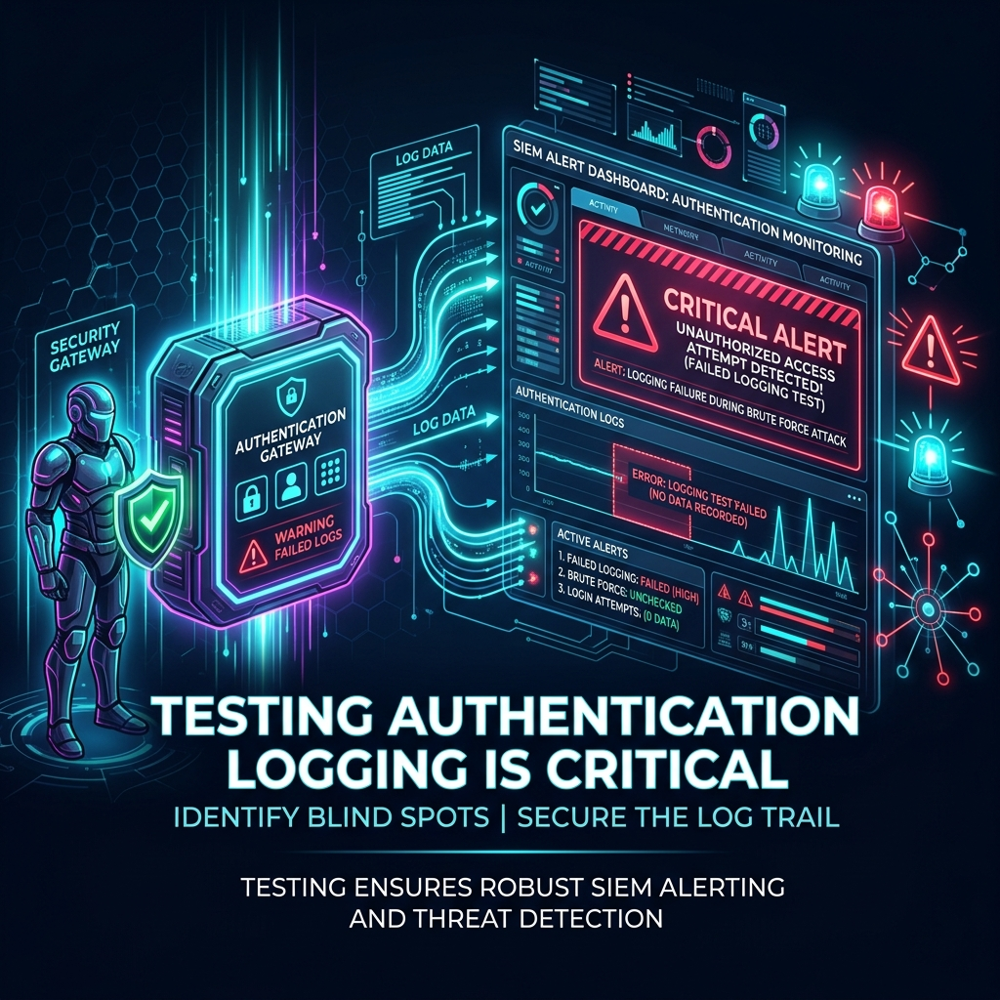

Testing the Gates: Why You Must Emulate Authentication Failures

In cybersecurity, there is a dangerous gap between what security rules assume they log and what is actually captured.
Many organizations build their entire detection architecture around static assumptions. They read the documentation for their SIEM, copy a rule for Windows Event ID 4625 (Logon Failure) or Linux SSH auth failures, enable it, and check the box on their compliance sheet.
But until you actively trigger the event, your rule is nothing more than a hypothesis.
Here is why active emulation is the only way to prove your security rules actually work under fire.
1. The Myth of "Documented" Logging
Modern enterprise networks are highly customized, and standard log paths are easily disrupted. Here are some of the most common reasons why "default" rules fail:
- Log Forwarding Failures: A server might be logging failed logins locally to its Windows Security Log or
/var/log/auth.log, but the log forwarding agent (e.g. Winlogbeat, Splunk Forwarder, or Rsyslog) might be misconfigured, offline, or blocking the specific Event ID. - Volume Bottlenecks: During peak hours, log brokers can drop events to prevent queue overflow. High-volume events like logon failures are often the first to be filtered out at the source or broker level to save license costs.
- SIEM Parsing Errors: If your SIEM is parsing syslog headers incorrectly, a standard failed SSH attempt might get logged as a generic "system connection" rather than an authentication failure, preventing your correlation rules from triggering.
Without generating real, active traffic, you have no way to verify that the log travels from the endpoint, through the broker, gets parsed correctly by the SIEM, and triggers the target alarm.
2. Testing the Windows and Linux Emulators
To validate this telemetry pipeline, we use two open-source modules designed to trigger clean, repeatable logs:
- EventID4625 (Windows): Emulates failed SMB/NTLM authentication loops.
- LinuxLoginFailure (Linux): Simulates failed SSH logins using both password brute-forcing and programmatically injected key-based signature failures.
The Testing Protocol
When deploying these emulators in your environment, follow this continuous validation loop:
- Verify Local Logging: Run the emulator against a test target and check the local log files directly. Ensure Event ID
4625is written to the Security Log on Windows, or/var/log/secure(RHEL) //var/log/auth.log(Ubuntu) on Linux. - Track the Broker Path: Verify that your log forwarder immediately captures the new log line and ships it to the ingestion queue.
- Inspect the SIEM Parser: Look at the raw indexed log inside your SIEM (Splunk, Elastic, Sentinel). Confirm that key fields—such as
source_ip,target_user,logon_type, andstatus_code—are correctly indexed and parsed. - Trigger the Alert: Confirm that the threshold rules (e.g. "5 failures from a single IP within 10 seconds") trigger the expected alert or Slack/Teams webhook.
3. Safe Emulation Practices
Emulating security threats on live networks requires strict control. An unconstrained brute-force test can easily trigger service account lockouts or crash legacy authentication servers.
Our modules are designed from the ground up for safety:
- Custom Usernames: Always test with a fake, non-existent username (e.g.
ngrt_test_account) to avoid locking out legitimate system administrators. - Controlled Intervals: Configure the
intervalflag (in seconds) to test low-and-slow threshold rules without flooding the target system with network packets. - Cross-Compiled Go Binaries: Standalone binaries mean you do not need to install python, compilers, or heavy libraries on production servers to run a test.
By integrating these lightweight, safe tools into your regular security pipelines, you can transform your threat detection from a checklist of assumptions into a verified, battle-tested shield.